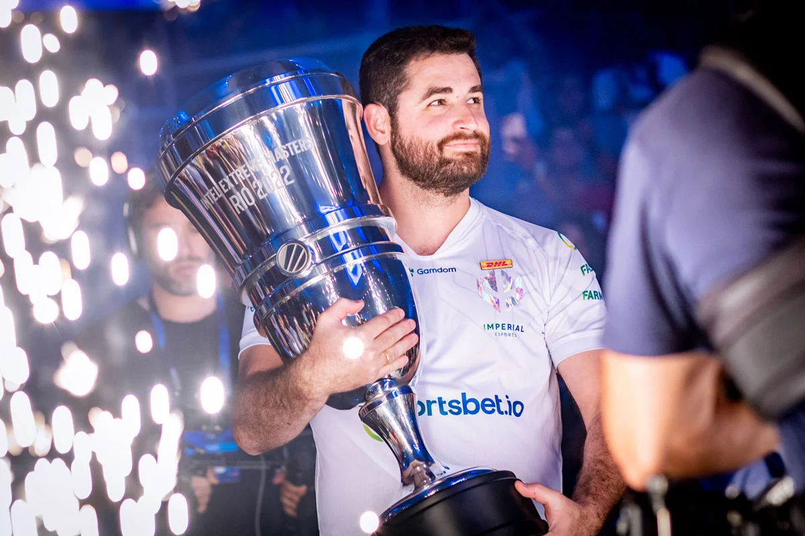

Biografia
Gabriel “Fallen” Toledo
Fallen com o troféu do major.
Dono de uma reputação inestimável dentro do cenário competitivo do Counter-Strike: Global Offensive,
FalleN é considerado uma lenda não só do FPS da Valve, mas do edsport brasileiro. Em cima de um talento
nato,
o paulista de Itararé construiu um império, mais lucrativo que qualquer outro no país.
Gabriel Toledo é considerado um dos melhores jogadores de Counter-Strike de todos os tempos,
tendo iniciado a sua trajetória nos primórdios da versão 1.6
Com diversas passagens em times importantes, títulos nacionais e internacionais,
premiações milionárias e
empreendimentos,
FalleN é referência e inspiração para milhares de jogadores espalhados não só no Brasil, mas também no
mundo.
Times e Anos de atuação:
| Time | Ano |
| Soldiers of Fire | 2005 |
| Team Crashers | 2005-2009 |
| FireGamers | 2009-2010 |
| CompLexity | 2010-2011 |
| Mandic | 2011-2012 |
| SemXorah | 2012 |
| playArt | 2012-2013 |
| ProGaming.TD | 2013-2014 |
| KaBuM! e-Sports | 2014 |
| Games Academy | 2014 |
| KaBuM.TD | 2014-15 |
| Keyd Stars | 2015 |
| Luminosity Gaming | 2015-2016 |
| SK Gaming | 2016-2018 |
| Luminosity Gaming | 2015-2016 |
| MIBR | 2018-2021 |
| Team Liquid | 2021-2022 |
| Imperial | 2022-2023 |
| FURIA | 2023- atua atualmente |
Principais Resultados em Campeonatos:
- 2016 MLG Columbus (Major)
Luminosity 2-0 NAVI - 2016 DreamHack Open Austin
Luminosity 2-0 Tempo Storm - 2016 ESL Pro League S3 Finals
Luminosity 3-2 G2 Esport - 2016 ESL One Cologne (Major)
SK Gaming 2-0 Team Liquid - 2017 IEM Sydney
SK Gaming 3-1 FaZe Clan - 2017 DreamHack Open Summer
SK Gaming 2-1 Fnatic - 2017 ECS Finals Season 3
SK Gaming 2-1 FaZe Clan - 2017 ESL One Cologne
SK Gaming 3-0 Cloud9 - 2017 EPICENTER
SK Gaming 3-2 Virtus.pro - 2017 BLAST PS Copenhagen
SK Gaming 2-1 Astralis - 2017 ESL Pro League S6 Finals
SK Gaming 3-1 FaZe Clan - 2018 Adrenaline Cyber League
SK Gaming 3-1 AVANGAR - 2018 Moche XL Esports
SK Gaming 2-0 Hellraisers - 2018 ZOTAC Cup Masters
MIBR 3-0 Team Kinguin - 2021 cs_summit 8
Team Liquid 3-1 FURIA - 2023 Elisa Masters Espoo
FURIA 3-1 Apeks
Referências e Fontes: